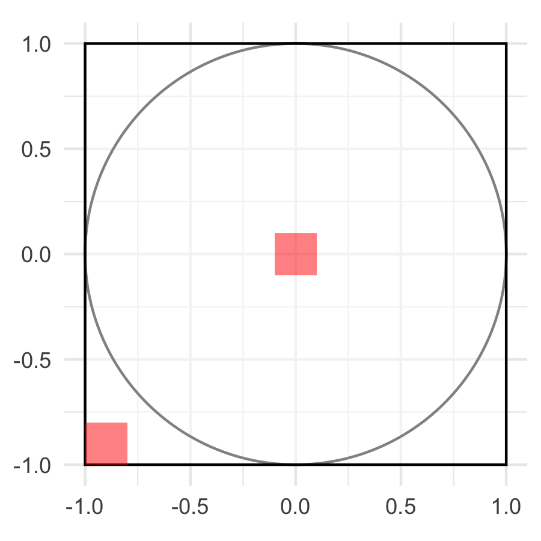
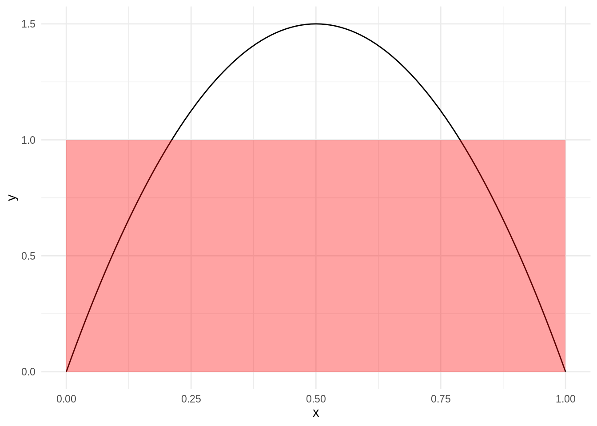
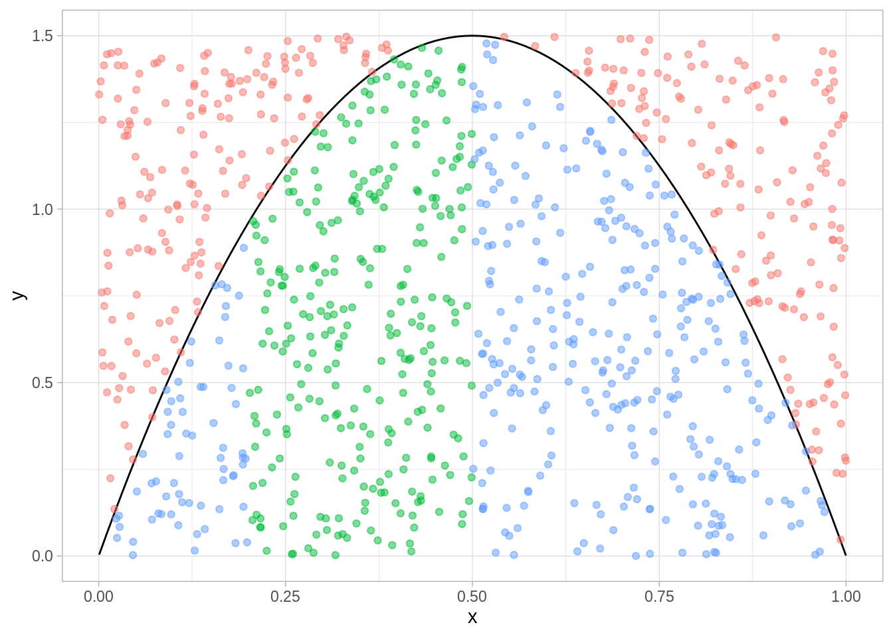

5.4 Modelos de probabilidad (definición general)
En muchos casos, el modelo equiprobable (discreto o continuo) no es tan fácil adaptar a problemas particulares de modelación probabilística. Por ejemplo:
- En el problema del dardo, como la mayor parte de la gente apunta hacia el centro, regiones centrales deberían tener probabilidad mayor que regiones cerca del borde.
- Si sacamos una pelota al azar de una bolsa revuelta, y las pelotas son de distintos tamaños, entonces las probabilidades de extraer cada pelota son diferentes.
Modelos apropiados para estos experimentos son más complicados, pues no tenemos la simetría que nos da asignaciones automáticas de probabilidades.
5.4.1 Espacios discretos
En el caso discreto, podríamos poner:
- Si los resultados posibles son \(\omega_1,\ldots, \omega_n\), asignamos probabilidades \(p_1\ldots p_n\) a cada resultado (pueden ser distintas),
- La probabilidad de un evento \(A\) es la suma de las probabilidades \(p_i\) de los elementos que están contenidos en \(A\).
5.4.1.1 Ejemplo: bolsa acumulada de lotería
Imaginemos que tenemos una lotería tipo Melate. Para simplificar, pensemos que se escogen 3 números del 1 al 10, y que tenemos 200 concursantes. ¿Cuál es la probabilidad de la bolsa de este concurso se acumule (nadie tenga la combinación ganadora)?
Podemos resolver este problema con conteo, pero veamos como hacerlo simulando.
seleccionar_combinacion <- function(){
sample(1:10, 3) %>% sort
}
acumula_bolsa <- function(n_concursantes = 200){
combinacion_ganadora <- sample(1:10, 3) %>% sort
boletos <- rerun(n_concursantes, seleccionar_combinacion())
map_lgl(boletos, ~ all(. == combinacion_ganadora)) %>% any
}
# probabilidad de que alguien gane
set.seed(99244)
prob_ganador <- rerun(500, acumula_bolsa()) %>% flatten_lgl %>% mean
# probabilidad de acumulación
1 - prob_ganador
#> [1] 0.206¿Qué problema ves con este ejemplo? En realidad, la elección de los concursantes no es aleatoria. Existen números favoritos (por ejemplo, el 7 o el 13), patrones que atraen a concursantes (patrones aritméticos, formas en el boleto de melate, selección de números según fechas de cumpleaños, etc.)
¿Qué tanto puede afectar esta elección consciente? Intenamos una variación simple: supongamos que la probabilidad de escoger el número 7 es más alta que otros números.
seleccionar_combinacion <- function(prob = rep(1, 10)){
sample(1:10, 3, prob = prob) %>% sort
}
# el 7 es 5 veces más probable:
p_numeros <- c(rep(1,6), 5, rep(1,3))
acumula_bolsa <- function(n_concursantes = 200, prob = rep(1, 10)){
combinacion_ganadora <- sample(1:10, 3) %>% sort
boletos <- rerun(n_concursantes, seleccionar_combinacion(prob = prob))
map_lgl(boletos, ~ all(. == combinacion_ganadora)) %>% any
}
# probabilidad de que alguien gane
prob_ganador <- rerun(500, acumula_bolsa(prob = p_numeros)) %>%
flatten_lgl %>% mean
# probabilidad de acumulación
1 - prob_ganador
#> [1] 0.4085.4.1.2 Ejemplo: comité
Supongamos que el proceso de selección del comité tiene sesgo, las mujeres se seleccionan con mayor probabilidad que los hombres:
comite <- function(){
candidatos <- c(paste("M", 1:9, sep = "_"), paste("H", 1:6, sep = "_"))
comite <- sample(candidatos, 5, replace = FALSE,
prob = c(rep(2, 9), rep(1, 6)))
n_mujeres <- sum(substr(comite, 1, 1) == "M")
n_mujeres == 2
}
rerun(1000, comite()) %>% flatten_dbl() %>% mean()
#> [1] 0.0865.4.2 Espacios continuos
En el caso de espacio de resultados continuos, también quisiéramos tener un concepto de resultados no equiprobables.
Por ejemplo, para el dardo en el tablero, es más realista pensar que la probabilidad de que el dardo caiga en un segmento de la zona central no es la misma a que caiga en un segmento de igual área en las orillas.
tablero_zonas <- tablero +
geom_rect(aes(xmin = -1, xmax = -0.8, ymin = -1, ymax = -0.8),
fill = "red", alpha = 0.5) +
geom_rect(aes(xmin = -.1, xmax = 0.1, ymin = -0.1, ymax = 0.1),
fill = "red", alpha = 0.5)
ggsave("img/tablero_zonas.png", tablero_zonas, width = 3, height = 3)
La definición de probabilidad como área relativa no se puede usar en estos casos, sin embargo, el enfoque de simulación se continúa manteniendo.
Comencemos con el caso de un dardo univariado. En este caso, la probabilidad se calcula como longitud relativa. La probabilidad de que el dardo caiga en el intervalo \([a,b]\subset [0,1]\) es
\[P([a,b]) = \frac{b-a}{1-0} = b-a\]
Y nótese ahora que podemos escribir este cálculo como la integral de una constante:
\[P([a, b]) = \frac{b-a}{1} = \int_a^b 1dx\] donde clarametne \(P([0,1]) = 1.\)
Ahora, si el dardo cae en ciertas zonas con mayor probabilidad podemos perturbar la función que integramos para asignar mayor probabilidad en zonas donde es más probable que el dardo caiga. Esto implica introducir una función \(f\), que llamamos densidad de probabilidad, cuya integral nos de valores de probabilidad:
ggplot(tibble(x = c(0 , 1)), aes(x)) +
stat_function(fun = dbeta, args = list(shape1 = 2, shape2 = 2)) +
geom_rect(data = NULL, aes(xmin = 0, xmax = 1, ymin = 0, ymax = 1),
fill = "red", alpha = 0.2)
\[P([a,b])=\int_a^bf(x)dx\]
Nótese que la integral sobre \([0,1]\) debe ser 1 (probabilidad de que el dardo caiga entre 0 y 1).
Podemos calcular probabilidades con simulación, por ejemplo la probabilidad de x en [0.2, 0.5]:
curva <- function(){
# Este método es simulación por rechazo
x <- runif(1)
y <- runif(1) * 1.5
while (dbeta(x, 2, 2) < y) {
x <- runif(1)
y <- runif(1) * 2.5
}
x
}
sims_x <- rerun(5000, curva()) %>% flatten_dbl()
mean(sims_x > 0.2 & sims_x < 0.5)
#> [1] 0.3954Consideramos la siguiente gráfica para ayudar en la intuición del método: los puntos seleccionados por encima de la función de densidad son rechazados, de manera que es claro que la probabilidad que estimamos arriba de caer en el intervalo de interés es el área bajo la curva (integral) de nuestra función de densidad:
tibble(x = runif(1000), y = runif(1000) * 1.5, dentro = dbeta(x, 2, 2) > y,
en_int = dentro * (x > 0.2 & x < 0.5), cat = case_when(!dentro ~ "a",
dentro & en_int ~ "b", TRUE ~ "c")) %>%
ggplot() +
stat_function(fun = dbeta, args = list(shape1 = 2, shape2 = 2)) +
geom_point(aes(x, y, color = cat), alpha = 0.5,
show.legend = FALSE)